I would be interested in more background information on the companies Video Games GmbH and Computran. I would also like to know, in which other countries Super Tank machines were in the arcades. If you know something about this, please send me an email.
Now, after I finally found out, how the video hardware really works, I see, that compared to other machines it is rather simple! My respect to all the MAME developers, who wrote so many drivers for previously unemulated systems, has become even bigger.
After I knew, how most of the things in Super Tank worked, it was really easy to make a MAME driver. The MAME source code is so well-organized, that it is big fun to code a driver for it. Well, "coding" is the wrong word. It is more like making only declarations on the machine hardware, and all the ugly procedural semantics are hidden from you and solved in the huge macro and function libraries of the MAME programming framework. Thanks to the MAME team for this great software.
On December 17, 2003 I got an email from Pierpaolo Prazzoli. He fixed a problem with the coinage DIP switches. Thank you, Pierpaolo! After this, I had a closer look at my DIP switch definitions, and found another bug. The bit for the extra tank and the one for the number of tanks were wrong. I corrected it and submitted the new driver version again.
On December 24, 2003 there was an update to the official MAME WIP site announcing my Super Tank driver. It read: "Norbert Kehrer submitted a fully working driver for Super Tank". There were also 4 screenshots added. Nice to be on the official MAME WIP page :-) Thanks!
On December 25, 2003 version 0.78 of the world's best arcade game emulator MAME was released. And it contains my Super Tank driver :-) I made my first contribution to this great open source project. Looking back, this project was a lot of fun for me. Thanks to the MAME core team for their excellent work and support.
The title screen and the "insert coins" screen:
| 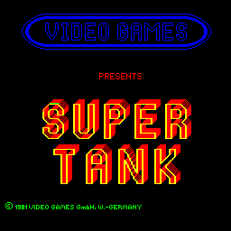 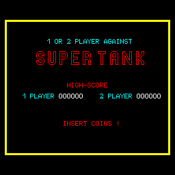 |
The game start screen:
| 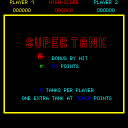 |
Some screen shots from the running game (first level):
| 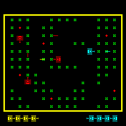 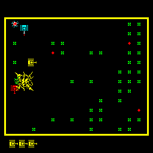 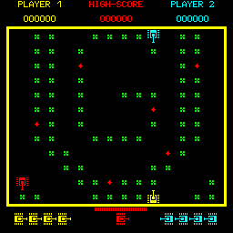 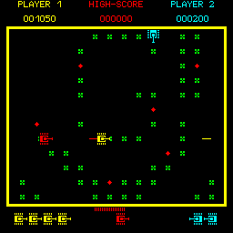 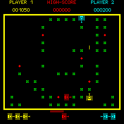 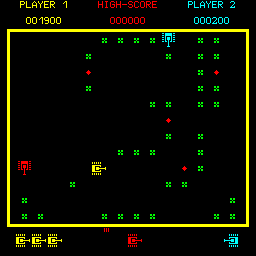 |
More screen shots from the running game (level 2):
| 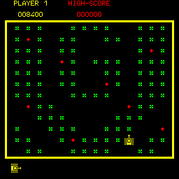 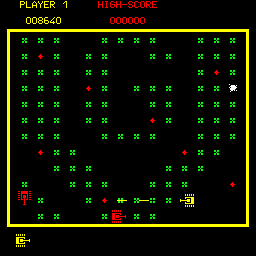 |
The "Super Tank" in action:
| 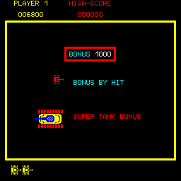 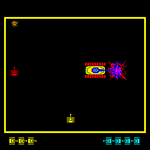 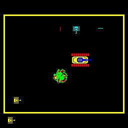 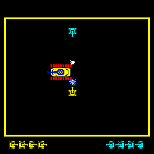 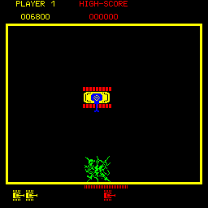 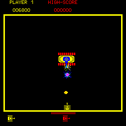 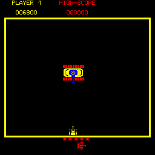 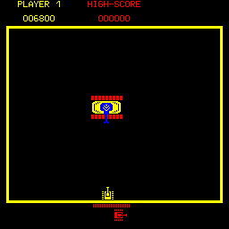 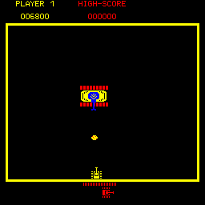 |
The Super Tank is destroyed:
| 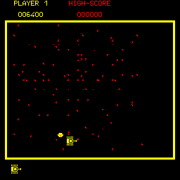 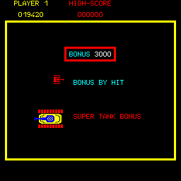 |
Game over (but I still have some quarters left :-):
| 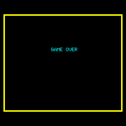 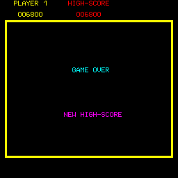 |